Workshop
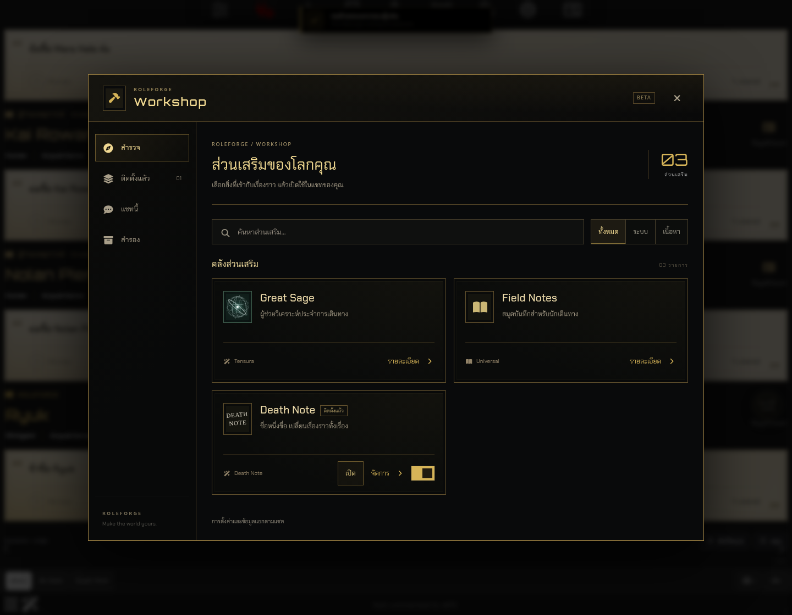
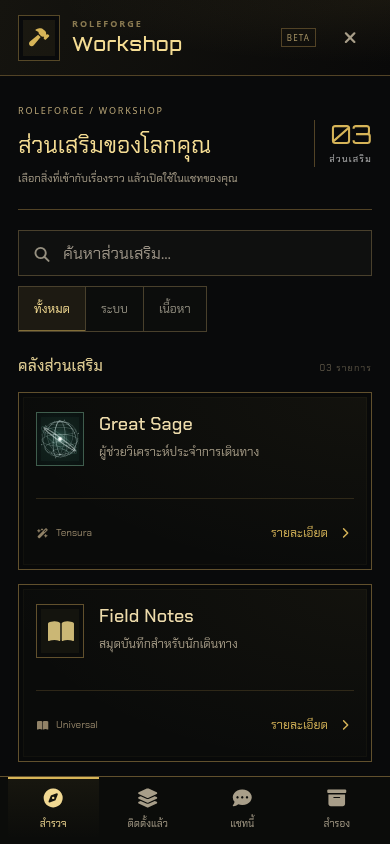
จัดการ Death Note
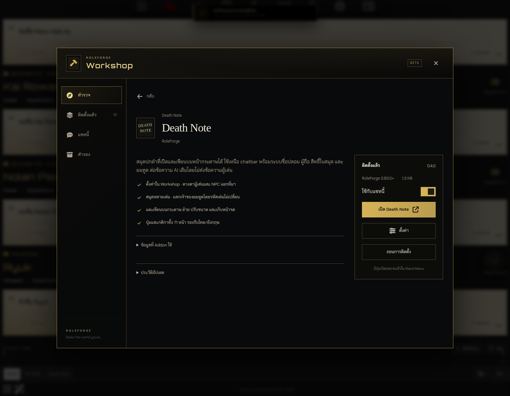
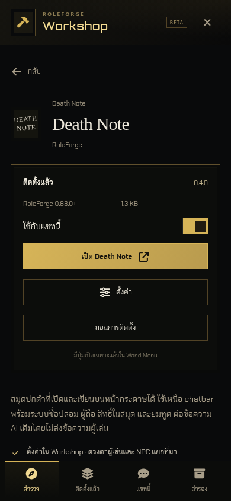
ตั้งค่า Addon
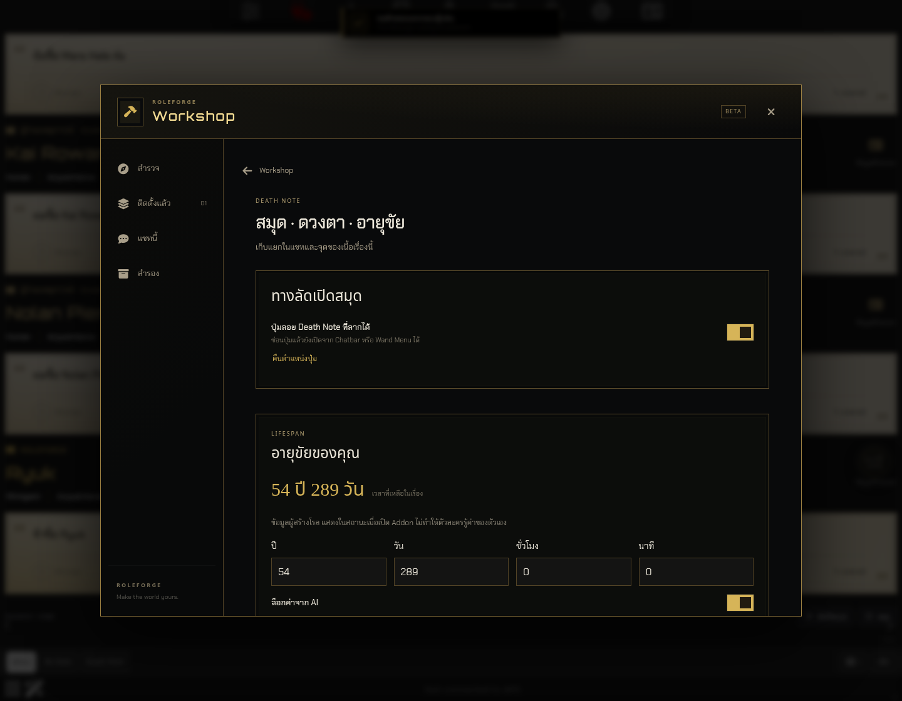
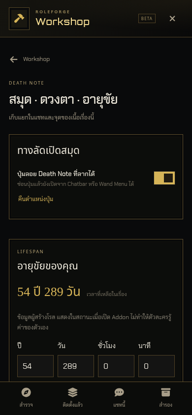
สมุด Death Note
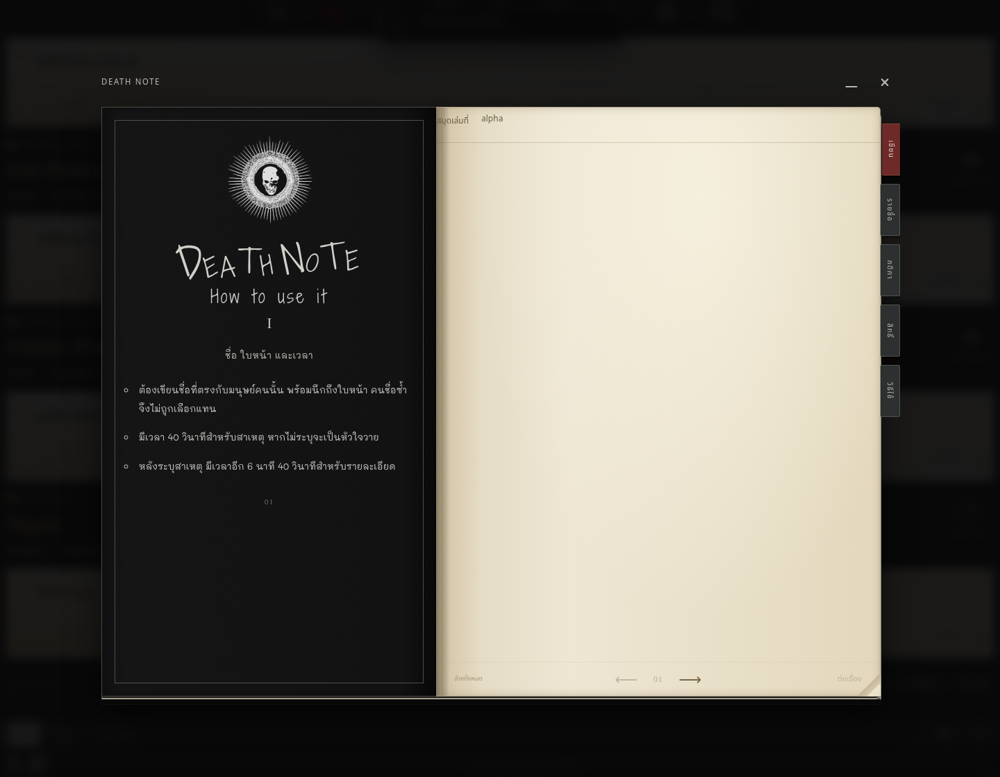
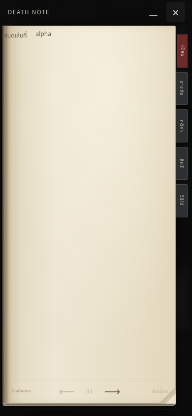
English
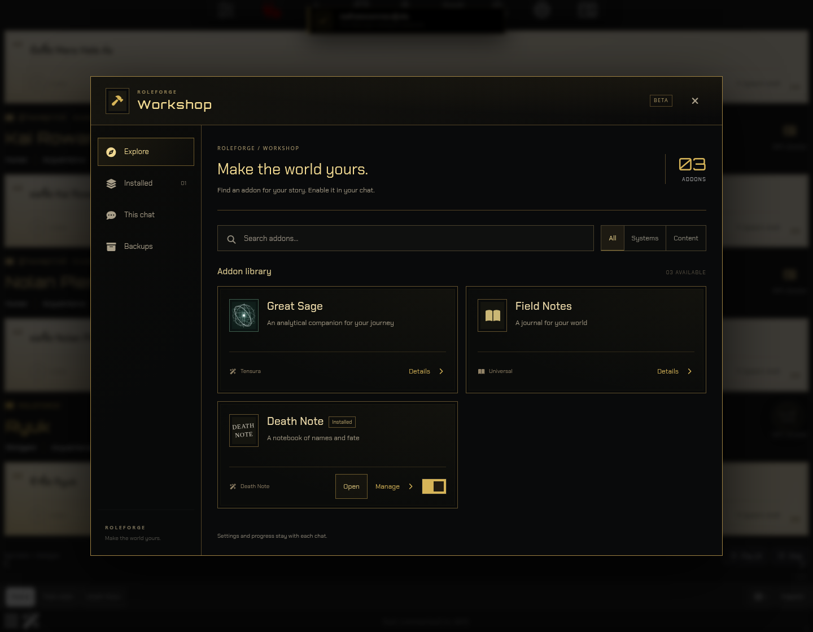
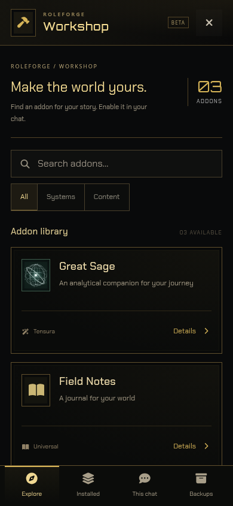
ก่อนปรับ · 0.84.0

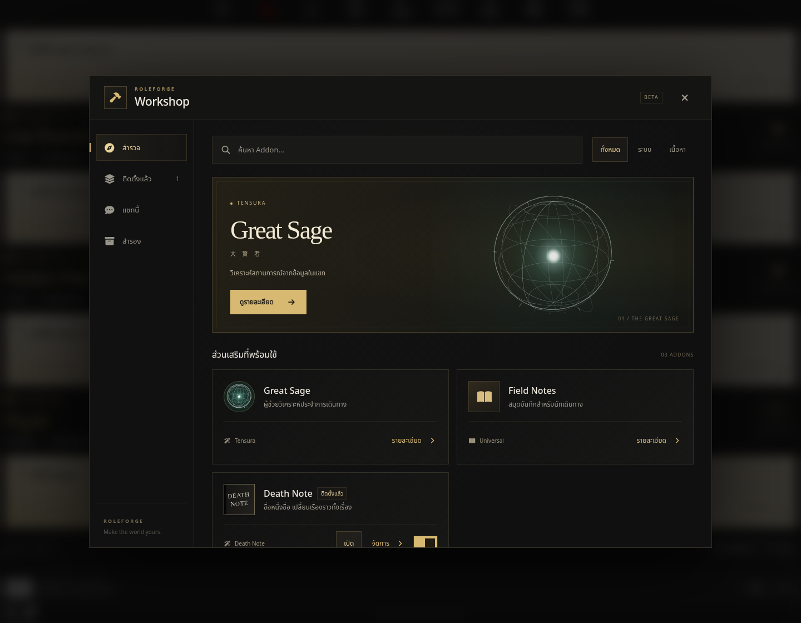

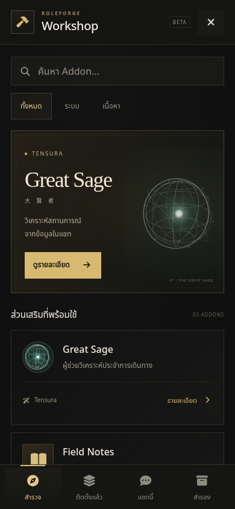
ภาพจาก SillyTavern 1.19.0 จริง · มือถือเป็น viewport/touch emulation · ตัวเลขแสดง median จากการเปิด 3 ครั้งหลังเตรียมข้อมูล บนเครื่องทดสอบ











